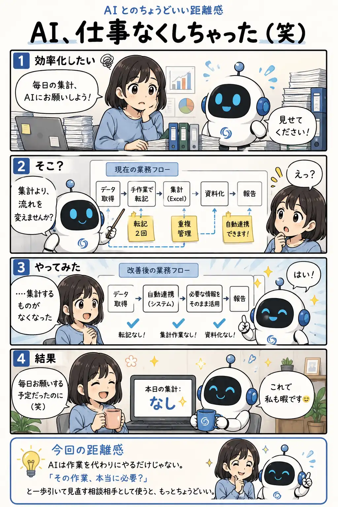

#050
AI、仕事なくしちゃった（笑）
効率化したら、AIまで暇になりました。

メモ
AIというと「今ある作業を速くする道具」を思い浮かべがちです。
でも、業務全体を見渡してもらうと、「この転記はいらない」「この管理はまとめられる」と、作業そのものを減らす提案が返ってくることがあります。
AIを毎日使うことが目的ではありません。AIをきっかけに仕事がシンプルになり、結果としてAIの出番が減るなら、それも立派な効率化です。
今回の距離感
AIは作業を代わりにやるだけじゃない。「その作業、本当に必要？」と一歩引いて見直す相談相手として使うと、もっとちょうどいい。